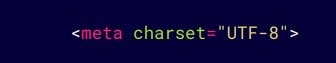
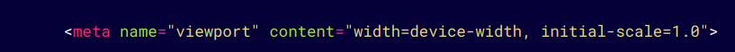
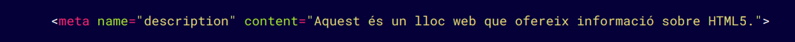
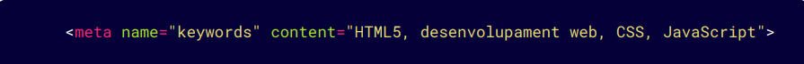
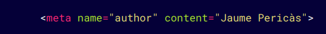
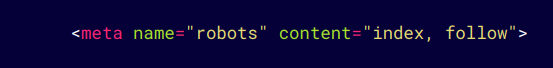
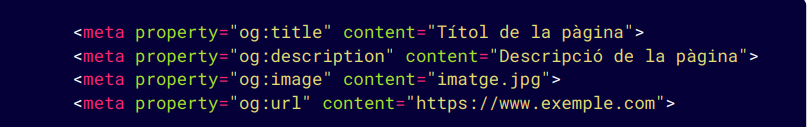
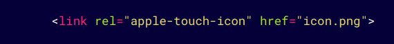
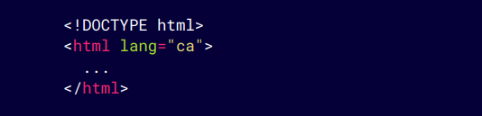
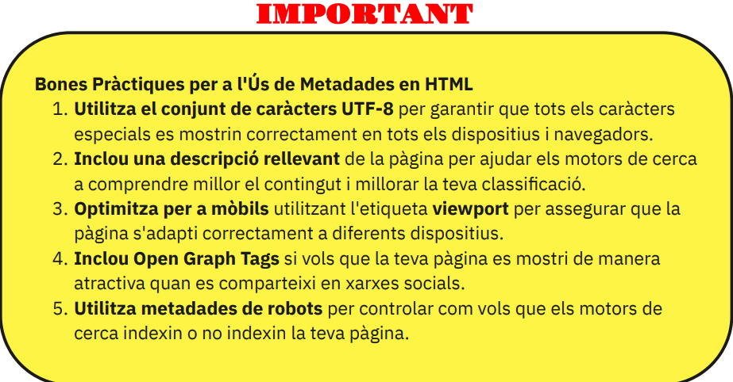

Las metadades son información crucial que se coloca dentro de la etiqueta <head> del documento HTML. Aunque no se muestran directamente en la página web que ve el usuario, son esenciales para describir las características del documento y proporcionar instrucciones a navegadores, motores de búsqueda (como Google) y otras aplicaciones.
<meta charset="UTF-8">), ya que soporta casi todos los caracteres y símbolos del mundo, evitando que el texto se vea con errores.
<meta name="viewport" content="...">). Garantiza que el contenido se adapte y escale correctamente en diferentes tamaños de pantalla, especialmente en dispositivos móviles.
<meta name="description" content="...">). Los motores de búsqueda suelen usar este texto para mostrar la descripción en los resultados de búsqueda.
<meta name="keywords" content="...">). Aunque hoy en día no es tan relevante para el posicionamiento principal, describe los temas centrales de la página.
<meta name="author" content="...">).
<meta name="robots" content="index, follow">).


<link> en lugar de <meta>, es un dato visual importante (<link rel="icon" ...>). Es el pequeño icono que aparece en la pestaña del navegador, junto al título de la página.<html> (ej. <html lang="ca">) para especificar el idioma general de la página, lo que es vital para la accesibilidad y el SEO.
